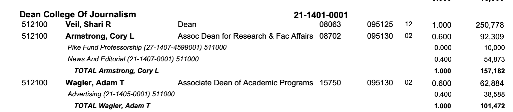
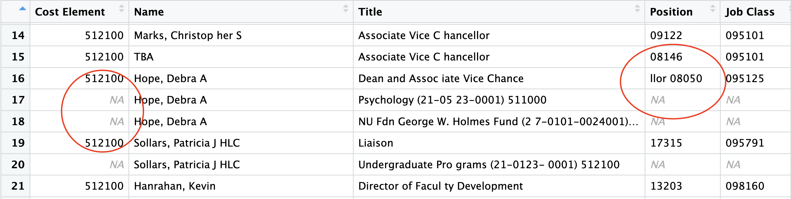

Among the wisest things I’ve ever seen written about AI is “I want AI to do my laundry and dishes so that I can do art and writing, not for AI to do my art and writing so that I can do my laundry and dishes.”
The same can be said for journalism. I want AI to do the chores so I can do the journalism. Time I’m not manually pulling apart PDFs is time I can spend talking to people.
Last week, Google launched their much anticipated Gemini 3 model, and much is being said and written about it. One very interesting thing they did was launch a Visual Studio Code version of their own called Antigravity. It’s a development environment with an “agentic coding surface” added as one of the primary interfaces to it.
I’ll be honest, when I first read about it, I was pretty meh. So it’s Claude Code (which you can plug into Visual Studio Code!) or Open AI’s Codex, but for Google this time. Okay. Fine. But I started seeing some overreaction to it online, and it made me curious.
I’m ready to say we may be looking at a truly impactful data journalism tool here. I don’t want to fall into the same trap and overreact by saying it’s as big as the spreadsheet or the search engine, but I’m also not saying it isn’t.
In short, it has astonishing potential as a data journalism tool.
What has me so excited? My employer’s salary “database” which is a 1,957 page PDF. A PDF formatted in such a way as to make parsing it a practical impossibility. And before you ask: state law says if they “publish” data in this form, then they don’t have to give it to you in a different form. Many of us have asked.
What makes it so hard are people who get paid out of multiple budget pots. Take, for example, me. I have one job according to the university: professor of practice. I get paid out of one account. My entry in the pdf is one line. Easy. Colleagues of mine might have multiple jobs. Some administrators in my college are half administrators (pot one), half professors (pot two). But they also have endowed positions, so they get paid from a third pot. In the PDF, they’re on four lines. Pots one, two and three and a fourth that is the total. But only the first line gets all of the data. The rest? Blank.

Notice also that names and where they get paid from blur together. Notice how the length of the alternate funds also overlap the name and position columns. There is no reason this data needs to look like this, but the university considers this as being responsive to a public records request. Want to analyze this data? Want to compare it across time? Compare administrators to faculty? Good luck.
That is, until Gemini 3 and Antigravity came along.
After an afternoon of messing around with Antigravity to fiddle with the design of this website, I decided to just try something. I had been messing with DeepseekOCR, an open weights model that you can run on your own hardware that is very good at finding tables in PDFs and converting those to markdown tables. I was very impressed. But I wondered how well Antigravity/Gemini 3 would do with this pdf.
Answer: Gobsmacked. Gob. Smacked.
I put the PDF and a screenshot of the first page in a folder, connected that folder to Antigravity, and wrote this half-assed prompt from the couch.
I am attempting to extract structured data from a frustratingly formatted PDF. What I need at the end is a csv file that has the data contained in the screenshot. I can handle the intricacies of the data after I get the structured version. Can you take a look at the screenshot first to see if you can extract the tabular structure?
I didn’t even ask it to do the whole PDF. I just wanted the screenshot of the first page. That’s it. What it did was devise an implementation plan, wrote a walkthrough of what it did as it was doing it, then wrote a Python script using pdfplumber that extracted the data out of all 1,957 pages, and then wrote a cleaner script to fix some formatting weirdness. It took my prompt, worked for about 10 minutes and spit out a csv file that was orders of magnitude better than anything I had managed myself in years of on-and-off messing with this file.
All I did was stare at it as it kept trying things and checking them, improving the code using random selections of data to check if it was all working. And then, it finished. I couldn’t believe it worked, so I opened it and was blown away with what it did.
It wasn’t perfect, however. In fact, it assumed that those extra rows where people got paid from other pots were a mistake and it filtered them out.
So I went back to the prompt:
I’ve been doing some of my own spot checking and there is a basic assumption at the beginning that is not correct. That assumption is lines 34-38 of the clean_salary_data.py. Specifically:
# Basic check: First column should be Cost Element (6 digits) # OR sometimes it’s empty if it’s a continuation? No, looking at the data, most data rows have it. # Let’s look at row 26: 512100,“Batman, Renee”,F,…
first_col = row[0].strip()
There are entries where the next line, which does not contain a cost object *is* a continuation. This data is university salary data, and how they show professors with endowed chairs, for example, is to put their faculty job on one line with a cost object, then the next line without one is their endowed chair line and at the bottom is a total line for that person. Not capturing the next few lines is causing some issues with accuracy. Can we capture those? For the vast majority of data, your method works extraordinarily well. It’s just not working for the few who have multiple salary inputs.
About 8 minutes later, I had an astonishingly good – much better though still not perfect - version of this data.
What’s wrong with it?
It didn’t want to make assumptions about spacing, so it left odd spacing that is an artifact of the PDF. So some people are Ma tt Waite or Profe ssor. The overlapping columns are an issue I’m likely going to have to contend with manually. I’m going to have to fill in blank columns and total up people to get to one row one person.

But I can’t stress this enough: this is light years beyond any tool I’ve been able to throw at this in years of trying. Every NICAR, I throw some new tool at it and leave disappointed. This is the first time my gob has been smacked by something an AI is doing.
Could I have written this code? Sure. I’ve even tried using pdfplumber to do it and didn’t have the same results. It would have taken me much longer, and frankly that’s probably enough to get me to go away. I’ve got papers to grade and students upset with me about how long it’s taking.
Can’t say this enough: astonished at what this might mean for freeing journalists up to do journalism instead of un-screwing up government PDFs.
Want to see all of the output? It’s on GitHub.